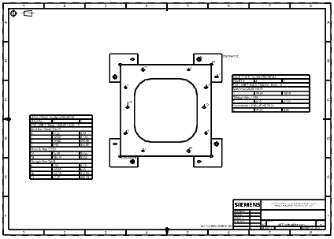

Estimated time to complete: 8–12 minutes
In this activity, you will:
Create one hole table for multiple solid bodies in a part.
Create separate hole tables for specific solid bodies on the same drawing sheet.
Update a hole table after a model edit.

Open the Create and update hole tables for multiple solid bodies activity.